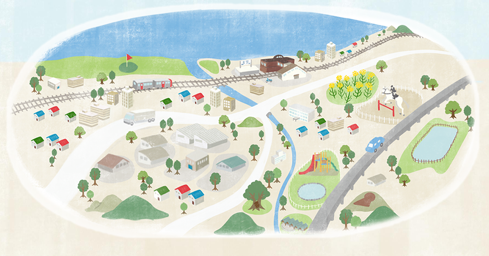
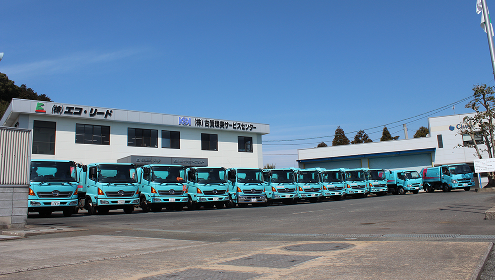
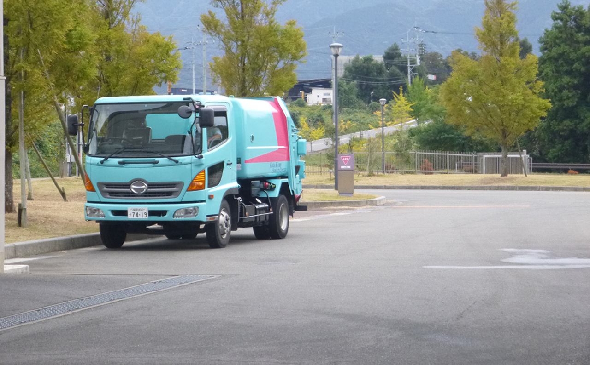
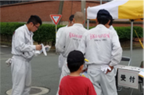
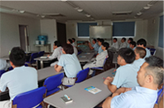
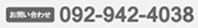

快適環境を創造する
株式会社古賀環美サービスセンター
menu
家庭用ごみの出し方
し尿汲取り/浄化槽
事業系ごみの出し方
環境への取り組み
会社概要
お問い合わせ
快適環境を創造する
株式会社古賀環美サービスセンター
家庭用ごみの出し方
し尿汲取り/浄化槽
事業系ごみの出し方
環境への取り組み
会社概要
お問い合わせ



可燃ごみ
詳しく見る
し尿汲取り/浄化槽
詳しく見る
資源ごみ
（分別収集）
詳しく見る
粗大ごみ
詳しく見る
臨時収集
詳しく見る
遺品整理
詳しく見る
処分できないものはこちら
家電サイクル法により、排出者（消費者）は適正な処理やそれに伴うリサイクル料金の支払いが 義務づけられています。
詳しく見る
企業向けごみ収集はこちら
事業系ごみは、ごみの種類や排出業者の業種により「事業系一般廃棄物」と「産業廃棄物」に 分類されます。廃棄物の分類毎にそれぞれ適正に処理することが必要です。
詳しく見る
ブログ最新記事
INFOMATION

2018.08.06
活動
古賀市ラヴアースクリーンアップ２０１８

2018.08.06
研修
熱中症予防の講習を受けました！
2018.08.06
研修
社内勉強会を実施しました!
快適環境を創造する
株式会社古賀環美サービスセンター
f
〒811-3121 福岡県筵内字野毛尾1522番地
